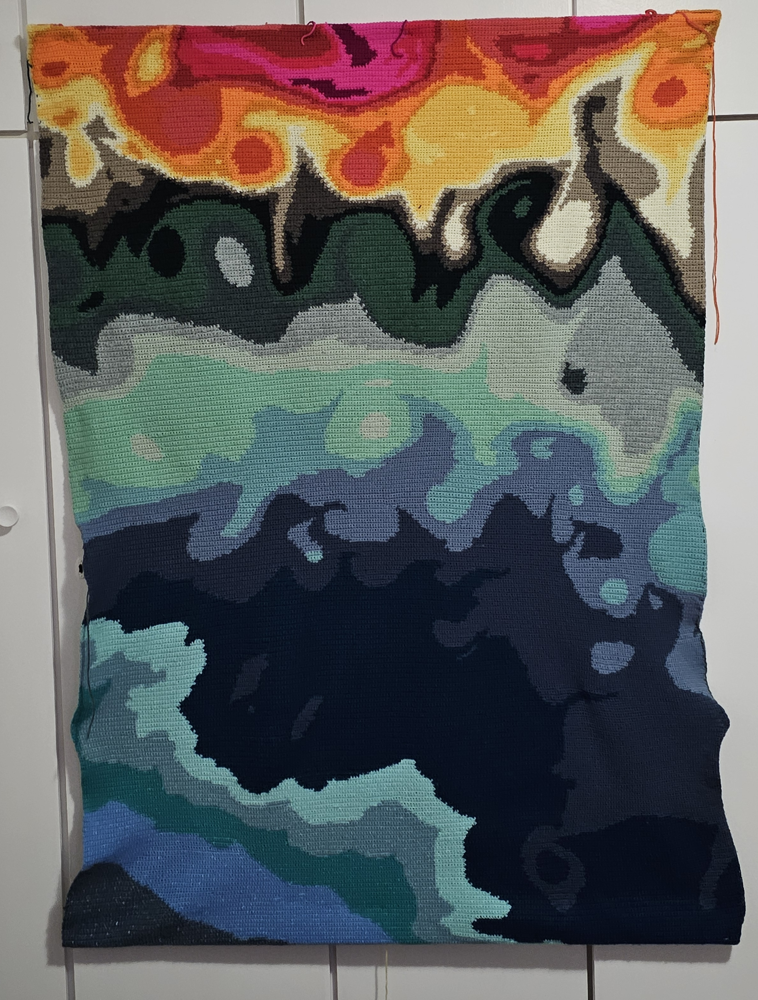

I built a mesoscale-resolving ocean model with NEMO.
Link to publication 
I built a mesoscale-resolving ocean model with NEMO.
See moreI built a mesoscale-resolving ocean model with NEMO.
Link to publicationI built a mesoscale-resolving ocean model with NEMO.
See more